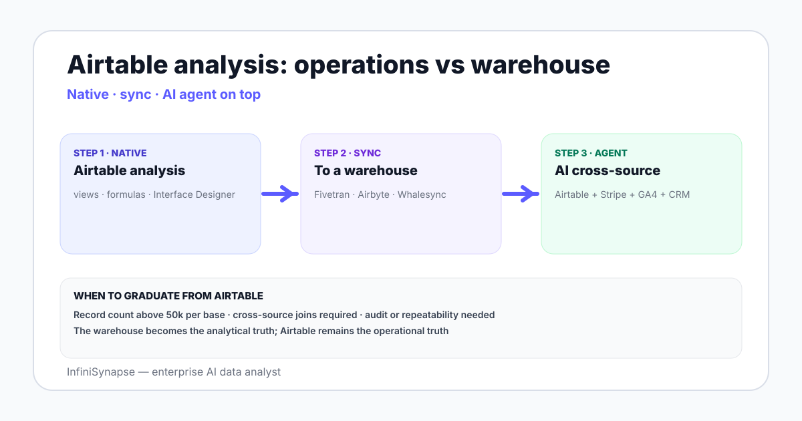

Airtable Data Analysis in 2026: Methods and AI Workflows
Airtable data analysis in 2026 — what Airtable handles natively, where to graduate, the API and sync patterns, and how AI data agents fit on Airtable-derived data.
AuthorInfiniSynapse Research, product and data architecture team
Published2026-06-28 · Last verified 2026-06-28 · Next review 2026-09-28
Evidence baseAirtable official documentation including API and sync reference, Airtable Interface Designer guides, hands-on usage in operations and marketing teams, and field experience syncing Airtable to warehouses.
Disclosure: Published by InfiniSynapse, an AI data analyst that connects to warehouses including those fed by Airtable sync. The methods apply regardless of which AI tool the team uses on top.
TL;DR
Airtable is a relational sheet — bases, tables, views, links between tables. Its native analytics covers grouped summaries, formulas, charts, and Interface Designer dashboards.
For under 50,000 records and questions a single base can answer, Airtable is enough. Beyond that, sync to a warehouse and analyze there.
The Airtable API supports record listing, filtering, and webhooks; common sync tools include Fivetran, Airbyte, and Whalesync to land Airtable bases in Postgres, BigQuery, or Snowflake.
Once Airtable data lands in the warehouse, an AI data agent answers ad-hoc questions across Airtable plus other sources — typical for operations teams that run process state in Airtable and product data elsewhere.
The cleanest pattern is to keep Airtable as the operational surface and use a warehouse plus AI agent as the analytical surface.
Airtable is a relational sheet — strong native analytics under 50k records and one base, weak above that. The graduation pattern is sync to a warehouse via Fivetran, Airbyte, or Whalesync; then an AI data agent answers cross-source questions on top. Keep Airtable as the operational surface; use the warehouse for analysis.

What Airtable handles natively
Grouped summaries. Group by single-select field, count records, sum a number field, average — covers most operational reporting.
Formula fields. Calculated columns with date arithmetic, string manipulation, conditional logic.
Linked records and rollups. The relational shape — link an item to its parent, roll up child counts and sums.
Views. Filtered, sorted, grouped subsets of a table — saved per audience.
Interface Designer. Dashboard-style layouts with charts, KPIs, record pickers.
Automations. Trigger-action workflows on record changes; not analysis but worth knowing.
For a process-managed-in-Airtable workflow under 50,000 records, native analytics covers the daily questions a team asks about its own work.
When to graduate from Airtable as the analysis layer
Three signals say it is time to move analysis off Airtable:
Record count. Above 50,000 records per base, formulas slow and views lag. The platform is built for operations, not warehouse-scale analytics.
Cross-source questions. "How do Airtable project records correlate with our Stripe revenue?" Airtable cannot answer this alone.
Audit or repeatability. Operations users edit Airtable in place; there is no version-controlled query log. For audit-shaped reporting, you need the warehouse.
Airtable API and sync patterns
Pattern
What it covers
Vendors
Native REST API
List, create, update, delete records; webhooks
Direct integration in your own code
ELT to warehouse
Sync Airtable bases to Snowflake, BigQuery, Postgres
Fivetran, Airbyte, Whalesync
Reverse sync
Push enriched data from warehouse back into Airtable
Hightouch, Whalesync
Airtable Sync
Cross-base sync inside Airtable
Native feature
The default modern pattern is one-way sync of Airtable bases into a warehouse, with the warehouse as the analytical truth and Airtable as the operational truth.
AI workflows on Airtable-derived data
Three patterns where an AI data analyst earns the seat after Airtable data is synced to a warehouse:
Cross-source analysis. Airtable project records joined to Stripe payment data, GA4 sessions, or HubSpot opportunities — the agent handles the joins.
Trend and cohort questions. Operations teams running process in Airtable rarely have time to build retention curves; the agent generates them on demand.
Ad-hoc explanations. "Why did our Airtable project completion rate drop last week?" The agent segments by project type, owner, and stage in one prompt.
Tool ladder for Airtable-shaped teams
Rung
Stack
When you stay
1
Airtable + Interface Designer
Solo or small team, single-base questions
2
Airtable + Airtable Sync across bases + native automations
Operations spans multiple bases, still under 50k records each
3
Airtable + sync to warehouse + BI tool
Cross-source questions, 50k+ records, dashboarding for stakeholders
Native Airtable handles this — group by Owner, count records where Status = Complete, divide by total. Native chart in Interface Designer renders the result.
2. Project velocity by client cohort
Cohort by client signup date, project completion time as a metric. Airtable can show the table; a warehouse plus a chart tool plus a cohort SQL pattern produces the curve.
3. Why did project throughput drop in week 22?
Ad-hoc question outside the dashboard. After Airtable sync to a warehouse, the AI data agent segments by team, project type, and external dependency, returns the candidates with the SQL it ran. See AI database query pillar guide for the connection pattern.
Airtable is the operational surface. The warehouse plus an AI agent is the analytical surface. Both belong; neither replaces the other.
Layer AI analysis on top of your Airtable-synced warehouse
Connect a Postgres, BigQuery, or Snowflake warehouse where your Airtable sync lands. Seed a small business glossary — what counts as a completed project, which status maps to which lifecycle stage. Then ask one ad-hoc question outside your dashboard.
Airtable data analysis is the practice of using Airtable native features — grouped summaries, formula fields, linked records and rollups, views, Interface Designer dashboards — to answer recurring questions about data managed inside Airtable bases. For larger record counts or cross-source questions, the analysis moves to a warehouse Airtable bases are synced to, with an AI data agent or BI tool answering questions on the warehouse layer.
What does Airtable handle natively for data analysis?
Six native capabilities cover most in-Airtable analysis: grouped summaries with count, sum, and average on grouped views; formula fields for calculated columns with date arithmetic and conditional logic; linked records and rollups for the relational shape; saved views as filtered, sorted, grouped subsets; Interface Designer for dashboard-style layouts with charts and KPIs; and automations that trigger actions on record changes.
When should I move analysis off Airtable?
Three signals say it is time: record counts above 50,000 per base where formulas slow and views lag, cross-source questions that require joining Airtable data with Stripe, GA4, HubSpot, or warehouse data, and audit or repeatability requirements where the analysis needs a version-controlled query log rather than operations users editing Airtable in place.
How do I sync Airtable to a data warehouse?
Four common patterns: the native REST API supports record listing, filtering, and webhooks for custom integrations; ELT vendors like Fivetran, Airbyte, and Whalesync land Airtable bases in Snowflake, BigQuery, or Postgres on a schedule; reverse-sync tools like Hightouch and Whalesync push warehouse data back into Airtable; and Airtable Sync handles cross-base sync inside the Airtable platform itself.
Can I use an AI data agent on Airtable data?
Indirectly — sync Airtable bases to a warehouse via Fivetran, Airbyte, or Whalesync, then connect an AI data agent to the warehouse read-only. The agent answers cross-source questions joining Airtable records with Stripe payments, GA4 sessions, HubSpot opportunities, or any other synced source. Direct querying of Airtable through agents is rare; the warehouse layer is the canonical analytical surface.
What is the difference between Airtable and a relational database for analysis?
Airtable is a relational sheet — designed for operations users editing records directly, with native UI surfaces like views, forms, and Interface Designer. A relational database like Postgres is designed for application backends and analytical workloads with stronger query performance, transaction guarantees, and SQL access. For operations workflows under 50,000 records, Airtable wins on UX; for analysis at scale, the warehouse layer wins.
What are common Airtable data analysis examples?
Three working examples: project completion rate by owner via native grouped summaries, project velocity by client signup cohort which needs a warehouse plus cohort SQL pattern, and ad-hoc explanation questions like why project throughput dropped in a given week which an AI agent on a warehouse-synced Airtable dataset handles by segmenting across teams, project types, and external dependencies in one prompt.
Methodology and review notes
Last updated: 2026-06-28 · Next scheduled review: 2026-09-28
This methods guide synthesizes Airtable official documentation including the REST API and Interface Designer reference, ELT vendor docs from Fivetran, Airbyte, and Whalesync, hands-on usage in operations and marketing teams, and field experience syncing Airtable to warehouses. The tool ladder and graduation signals reflect observed practice rather than vendor positioning.
Conflict of interest: InfiniSynapse publishes this guide and sells an enterprise AI data analyst. To reduce bias, the page leads with the topic itself, treats InfiniSynapse as one option among many, and links to external sources for every numeric claim.
Update cadence: Reviewed every 90 days for accuracy and link health.